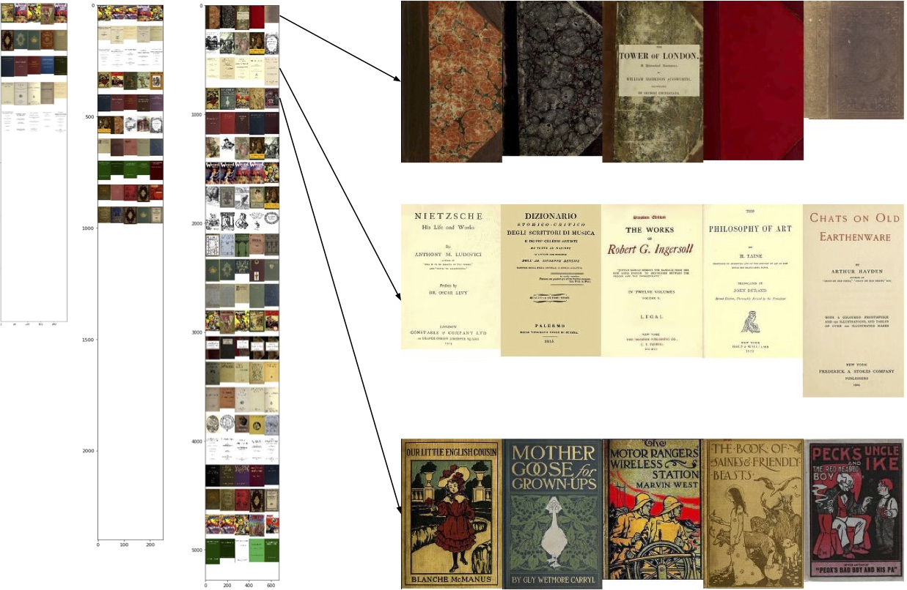

1,400 book covers sorted using UMAP and RasterFairy
K-means cluster analysis
We know we shouldn't judge books by their covers, but what happens when we do? Gutenberg covers tries to sort 1,400 book covers from the Gutenberg collection by visual similarity alone. This is a work in progress...